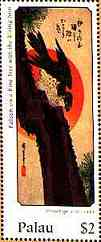
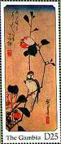
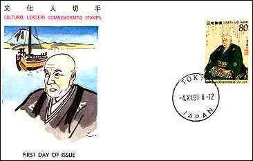
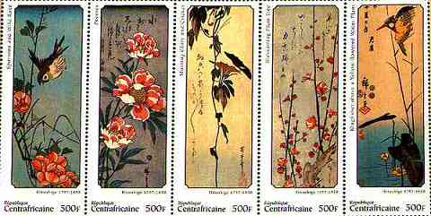
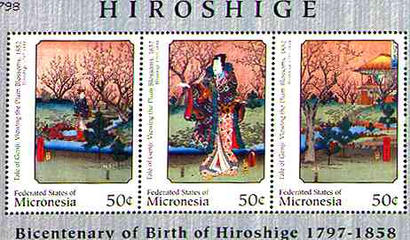
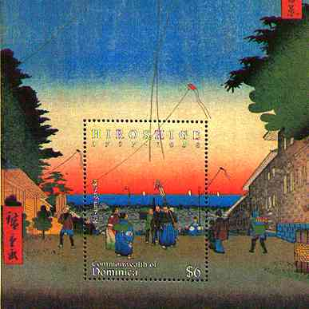
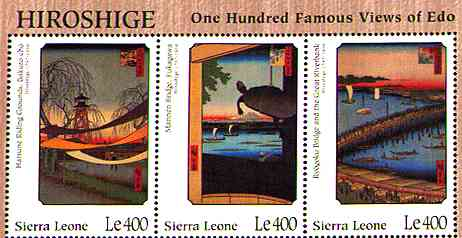

| Revised: 07/04/00. Copyright © 1997 - 2000 by Victor Manta, Switzerland. All rights reserved in all countries. |
|
||
| Hiroshige,
full name Ando Hiroshige (1797-1858), Japanese painter and
printmaker, known especially for his landscape prints. The last great figure of the
Ukiyo-e, or popular, school of printmaking, he transmuted everyday landscapes into
intimate, lyrical scenes that made him even more successful commercially than his
contemporary, Hokusai. Ando Hiroshige was born in Edo (now Tokyo) and at first, like his father, was a samurai fire warden, one of the hereditary vassals of the Tokugawa shoguns. The prints of Hokusai are said to have first kindled in him the desire to become an artist, and he suffered the lesser samurai's proverbial poverty. In 1811 he entered the studio of Utagawa Toyohiro, a renowned painter, as an apprentice. In 1812 Hiroshige took his teacher's name (a sign of graduation), signing his work Utagawa Hiroshige. His career falls roughly into three periods. From 1811 to about 1830 he created prints of traditional subjects such as young women and actors, |
also producing commercially popular pictures of birds and flowers. In around 1830 he published an acclaimed set of famous places in Edo. During the next 15 years he won fame as a landscape artist, reaching a peak of success and achievement in 1833 when his masterpiece, the print series Tokaido gojusan-tsugi (Fifty-Three Stations of the Tokaido), scenes on the road connecting Edo and Kyoto, was published. He maintained this high level of craftmanship in other travel series, including over 20 more sets of views of the Tokaido. The work he did during the third period, the last years of his life, is sometimes of lesser quality, as he appears to have hurriedly met the demands of popularity. However, some series from this period, including Meisko Edo hyakkei (One Hundred Views of Edo), contain especially noted masterpieces. He died of cholera on October 12, 1858, in Edo. | |
 |
||
 |
||
 |
 |
With Hokusai, Hiroshige dominated the popular art of Japan in the first half of the 19th century. His work was not as bold or innovative as that of the older master, but he captured, in a poetic, gentle way that all could understand, the ordinary person's experience of the Japanese landscape as well as the varied moods of memorable places at different times. His total output was immense, some 5,400 prints in all. Source: Microsoft Encarta 1996.
 |
 Kasumigaseki |
 |
THE 200TH BIRTH ANNIVERSARY OF HIROSHIGE
|
-
Japan 1 value |
-
Central Afr. Rep. 16 v. in 3 sheetlets + 3 SS - Gambia Part II 12 values + 2 SS - Gambia Part III 12 values + 2 SS - Micronesia 9v in 3 sheetlets + 2 SS - Nevis 6 values + 2 SS - St.Vincent 6 values + 2 SS - Sierra Leone 6 values + 2 SS - Tanzania 6 values + 2 SS - Togolaise 12 v. in 2 sheetlets + 2 SS |
| Revised: 07/04/00. Copyright © 1997 - 2000 by Victor Manta, Switzerland. All rights reserved in all countries. |
|
||